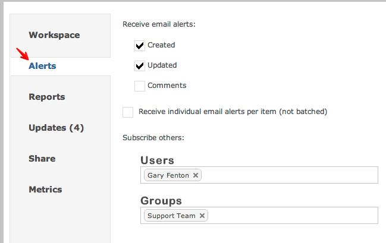

You can choose to receive email alerts whenever something changes within the workspace

By default, one summary email is sent detailing all changes. However, you can opt to receive individual email alerts for every change.
If you subscribe co-workers, they have the right to un-subscribe at any time.
The following video provides detail into functionality and proper configuration of Workspace alerts.